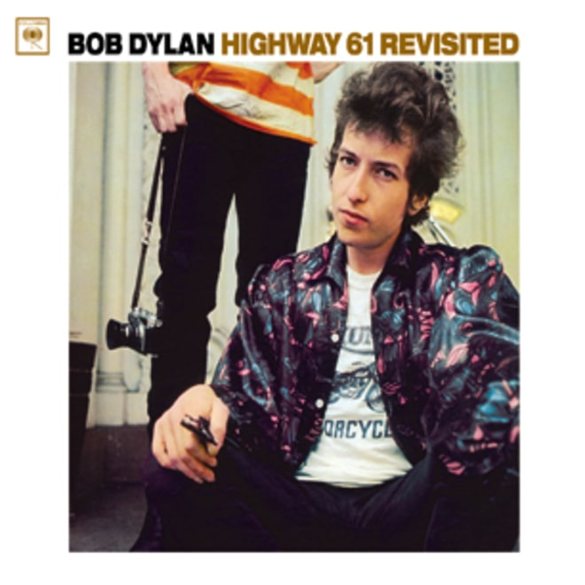
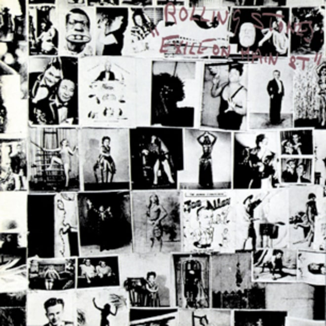
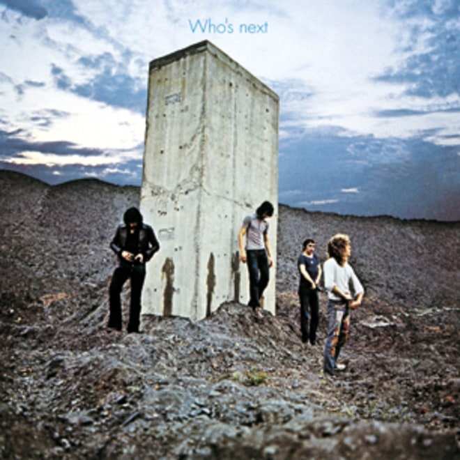
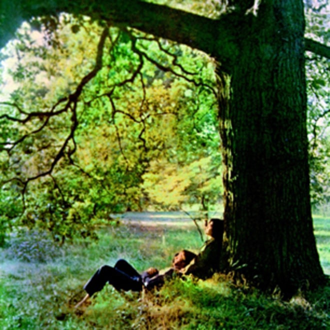
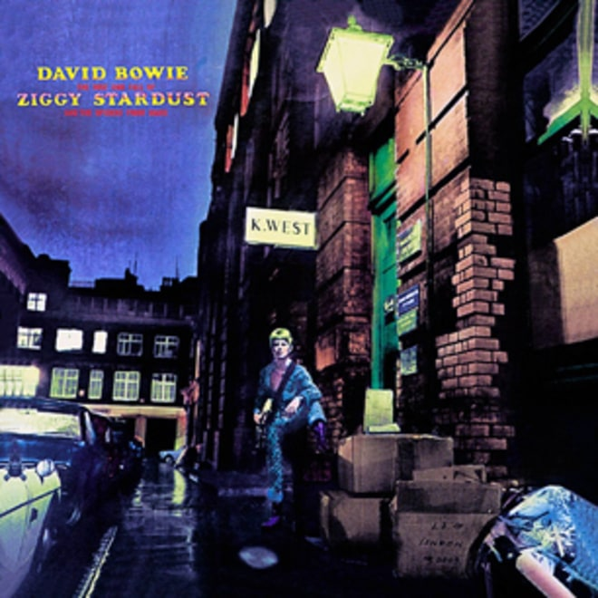
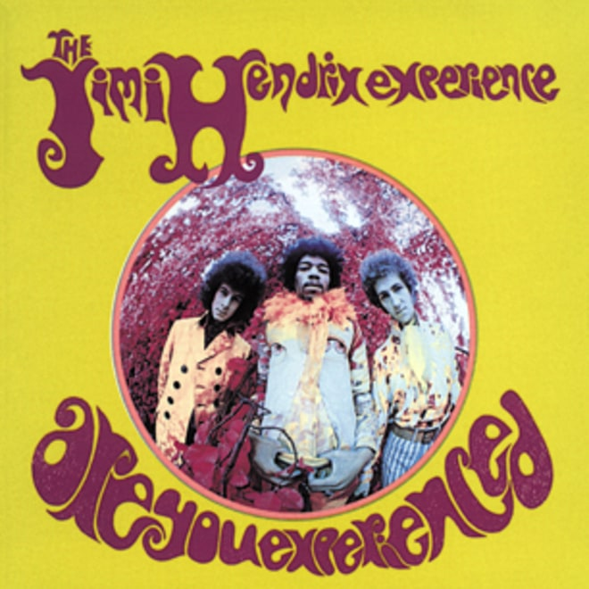
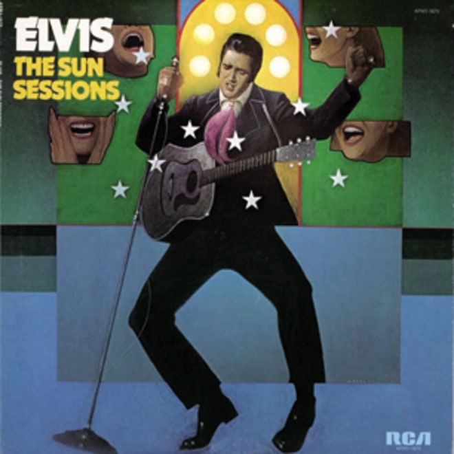
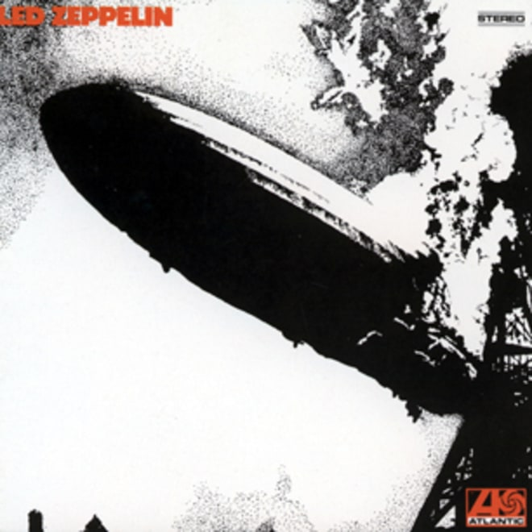

<!--  <header class="art-header">
    <h1>Gallery</h1>
  </header>
  <p>Pellentesque et metus et metus euismod interdum. Quisque pharetra felis at tristique facilisis. Ut arcu nisi, auctor quis
    dui ac, ornare suscipit dolor. Aliquam suscipit lectus quis fermentum ornare.</p>
  <div class="product-row">
    <div class="product-item item-01">
      <h2 class="product-item-header">The Beatles, <br> Sgt. Pepper's Lonely Hearts Club Band</h2>
      
      <p class="product-item-text">$6.99</p>
      <p class="product-item-text">Year: 1967<br>SKU: 5203000</p>
      <p class="product-item-text">Sgt. Pepper's Lonely Hearts Club Band is the most important rock & roll album ever made, an unsurpassed adventure in
        concept, sound, songwriting, cover art and studio technology by the greatest rock & roll group of all time.</p>
    </div>
    <div class="product-item item-02">
      <h2 class="product-item-header">Bob Dylan, <br> Highway 61 Revisited</h2>
      
      <p class="product-item-text">$4.99</p>
      <p class="product-item-text">Year: 1965<br>SKU: 5588602</p>
      <p class="product-item-text">Recorded in a staggering six days, Highway 61 Revisited – named after the road that runs from Bob Dylan's home state
        of Minnesota down through the Mississippi Delta – is one of those albums that changed everything.</p>
    </div>
    <div class="product-item item-03">
      <h2 class="product-item-header">The Rolling Stones, <br> Exile on Main Street</h2>
      
      <p class="product-item-text">$4.99</p>
      <p class="product-item-text">Year: 1972 <br>SKU: 5217102</p>
      <p class="product-item-text">A dirty whirl of blues and boogie, the Rolling Stones' 1972 double LP "was the first grunge record," guitarist Keith
        Richards crowed proudly in a 2002 interview.</p>
    </div>
    <div class="product-item item-01">
      <h2 class="product-item-header">The Who, <br> Who's Next</h2>
      
      <p class="product-item-text">$5.99</p>
      <p class="product-item-text">Year: 1971<br>SKU: 5286533</p>
      <p class="product-item-text">Pete Townshend said he suffered a nervous breakdown when his planned follow-up to the rock opera Tommy, the ambitious,
        theatrical Lifehouse, fell apart. But he was left with an extraordinary cache of songs that the Who honed for what
        became their best studio album, Who's Next. "Won't Get Fooled Again," "Bargain" and "Baba O'Riley" (named in tribute
        to avant-garde composer Terry Riley and Townshend's spiritual guru Meher Baba) all beam with epic majesty, often
        spiked with synthesizers.</p>
    </div>
    <div class="product-item item-02">
      <h2 class="product-item-header">John Lennon, <br> Plastic Ono Band</h2>
      
      <p class="product-item-text">$5.99</p>
      <p class="product-item-text">Year: 1970<br>SKU: 7744602</p>
      <p class="product-item-text">Also known as the "primal scream" album, referring to the painful therapy that gave rise to its songs, Plastic Ono
        Band was John Lennon's first proper solo album and rock & roll's most self-revelatory recording. Lennon attacks and
        ­denies idols and icons, including his own former band ("I don't believe in Beatles," he sings in "God"), to hit
        a pure, raw core of confession that, in its echo-drenched, garage-rock crudity, is years ahead of punk.</p>
    </div>
    <div class="product-item item-03">
      <h2 class="product-item-header">David Bowie, <br> The Rise and Fall of Ziggy Stardust and the Spiders From Mars</h2>
      
      <p class="product-item-text">$12.99</p>
      <p class="product-item-text">Year: 1972 <br>SKU: 4412309</p>
      <p class="product-item-text">This album documents one of the most elaborate self-mythologizing schemes in rock, as David Bowie created the glittery,
        messianic alter ego Ziggy Stardust ("well-hung and snow-white tan"). The glam rock Bowie made with guitarist Mick
        Ronson on tracks like "Hang on to Yourself" and "Suffragette City" is an irresistible blend of sexy, campy pop and
        blues power. The anthem "Ziggy Stardust" is one of rock's earliest, and best, power ballads.</p>
    </div>
    <div class="product-item item-01">
      <h2 class="product-item-header">The Jimi Hendrix Experience, <br> Are You Experienced?</h2>
      
      <p class="product-item-text">$9.99</p>
      <p class="product-item-text">Year: 1967<br>SKU: 8962474</p>
      <p class="product-item-text">This is what Britain sounded like in late 1966 and early 1967: ablaze with rainbow blues, orchestral guitar feedback
        and the personal cosmic vision of black American émigré Jimi Hendrix.</p>
    </div>
    <div class="product-item item-02">
      <h2 class="product-item-header">Elvis Presley, <br> The Sun Sessions</h2>
      
      <p class="product-item-text">$7.99</p>
      <p class="product-item-text">Year: 1999<br>SKU: 9621487</p>
      <p class="product-item-text">Incredibly, it took more than 20 years for Presley's Sun output to be properly collected on a 1976 LP – which has since
        been superseded by this 1999 double-CD chronicle of the King's beginnings at Sun. It collects everything he cut at
        the studio, including alternate takes and the 1953 acetate he recorded as a gift for his mother as a shy and awkward
        recent high school graduate.</p>
    </div>
    <div class="product-item item-03">
      <h2 class="product-item-header">Led Zepplin, <br> Led Zepplin</h2>
      
      <p class="product-item-text">$9.99</p>
      <p class="product-item-text">Year: 1969 <br>SKU: 6564321</p>
      <p class="product-item-text">On their first album, Led Zeppelin were still in the process of inventing their own sound, moving on from the heavy
        rave-ups of guitarist Jimmy Page's previous band, the Yardbirds. But from the beginning, Zeppelin had the astonishing
        fusion of Page's lyrical guitar-playing, Robert Plant's paint-peeling love-hound yowl, and John Paul Jones and John
        Bonham's avalanche boogie.</p>
    </div>-->